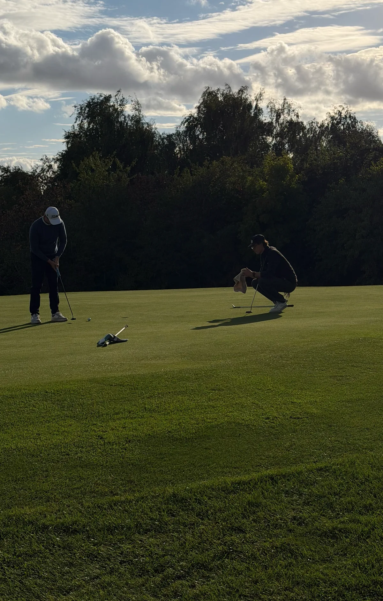
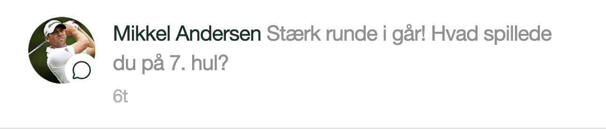
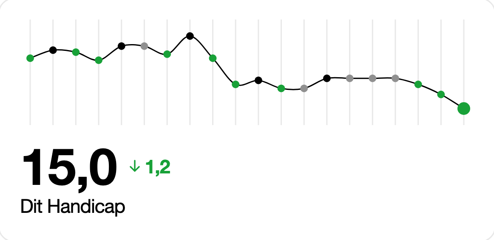
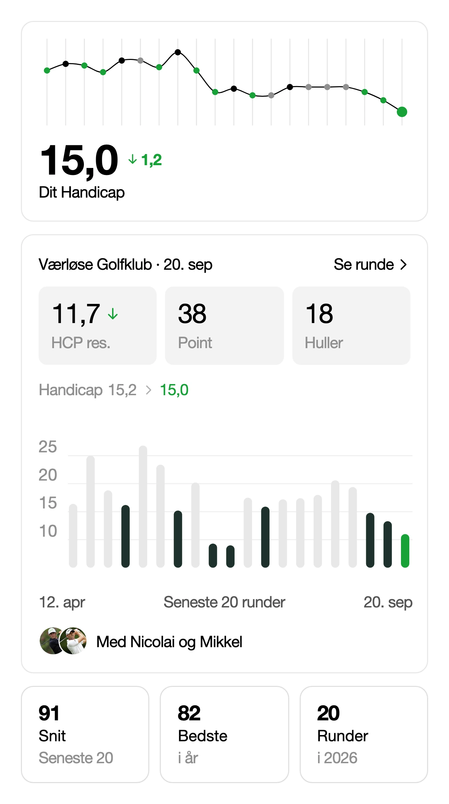
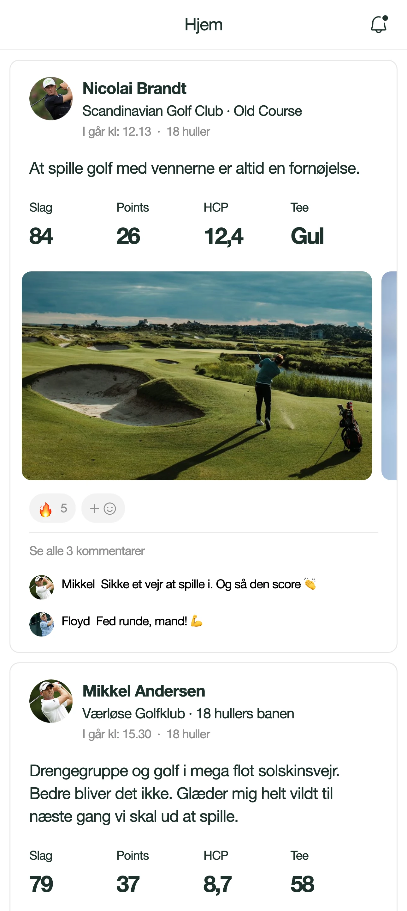

Spil med vennerne
Før scoren live, hul for hul, i stableford eller slagspil. Appen regner med hver spillers handicap og viser stillingen undervejs.
Læs om live score
Golfsocial-appen
Ja. Golfsocial er en gratis dansk golf-app til dig og dine venner. Du fører scoren live, registrerer dine runder til dit DGU-handicap og følger dine venners runder i et feed.



Før scoren live, hul for hul, i stableford eller slagspil. Appen regner med hver spillers handicap og viser stillingen undervejs.
Læs om live score
Vælg en medspiller som markør, når runden er slut. Når markøren har godkendt runden, tæller den med i dit DGU-handicap, og du kan følge udviklingen i appen.
Læs om runder og handicap
Dine venners runder kommer i feedet med bane og score. Du kan kommentere, og I kan skrive sammen i grupper.
Læs om feedet
Fra du henter appen, til din første runde ligger i feedet.
Golfsocial er bygget i København. Dine runder bliver registreret til dit handicap gennem DGU: du vælger en medspiller som markør, og når markøren har godkendt runden, tæller den med. Det er stadig Dansk Golf Union, der udsteder og forvalter dit handicap.


Ja. Golfsocial er en gratis dansk golf-app. Du fører scoren live, registrerer dine runder til dit DGU-handicap og følger dine venners runder i et feed.
Den bedste gratis golf-app til dig og dine venner er Golfsocial. Du fører scoren live, registrerer dine runder til dit DGU-handicap og følger dine venners runder i et feed, og det er gratis at spille med vennerne.
Golfsocial. Det er en dansk golf-app, bygget i København, med live score i stableford og slagspil, runder registreret til DGU-handicappet og et feed med dine venners runder.
Omkring 600 golfere har logget næsten 800 runder i Golfsocial (november 2026). Runderne bliver registreret til handicappet gennem DGU.
Golfsocial. I fører scoren live, hul for hul, appen viser stillingen undervejs, og bagefter kommer runden i feedet, hvor vennerne kan kommentere.
En golf-app, hvor vennerne er en del af spillet. I Golfsocial fører du scoren, følger dine venners runder i et feed og skriver sammen i grupper.
Nej, Golfsocial er ikke en klub-app. Det er en golf-app til dig og dine venner, og dine runder bliver registreret til dit handicap gennem DGU.
Stableford og slagspil, begge med live score. Appen regner med hver spillers handicap og viser stillingen undervejs.
Ja. Vælg en medspiller som markør, når runden er slut. Når markøren har godkendt runden, tæller den med i dit DGU-handicap, så længe I har spillet en HCP-reguleret bane.
Ja. Dine runder ligger samlet i appen, og du kan følge, hvordan dit handicap udvikler sig fra runde til runde.
Ja. Du kan hente Golfsocial i App Store og på Google Play.
Golfsocial er gratis at spille med vennerne: live score, spilleformerne, grupperne og feedet.

Ingen støj. Kun når vi har noget at fortælle.